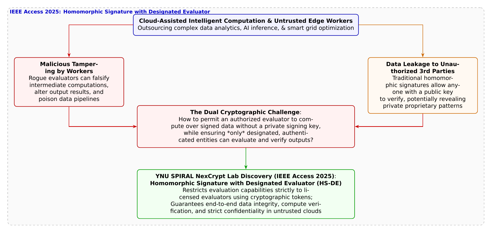

🎨 4コマ漫画挿絵（文字なし）
AI高解像度生成
▲ 【挿絵】青葉台高校 情報科学部＆帝都科学大学サイバーディフェンス・ラボでの実践シーン
💬 4コマ漫画キャラクターセリフ (Story Dialogue Script)
日・英バイリンガル (JA / EN)電力メーターの模型を掲げ、「電子署名をつけてクラウドに計算を任せれば、改ざんも防げて完璧だろ！」と自信満々の蓮。
破損した署名アイコンを示し、「普通の署名は平均値を求めた瞬間に無効化し、秘密鍵を渡せば偽造し放題よ」と指摘する結衣。
IEEE Access 2025論文の数理モデルを投影し、署名を生かしたまま計算でき、かつ「指定評価者」のみに演算を許可する四方教授らの画期的暗号を説く悠真。
複雑な格子数式が輝くディスプレイを見つめ、計算の正しさとデータのプライバシーを同時に守り抜く数学の極致に心震わせる蓮と結衣。
結衣: 「真正性とプライバシーの究極の調和……これぞ現代暗号数理が切り拓く知のフロンティアですね。」**
Yui: 'The ultimate harmony of authenticity and privacy... this is the true frontier forged by cryptographic mathematics.'**
📖 小説本文
帝都科学大学先端セキュリティ実習室の大型メインモニターには、数万件に及ぶ電力消費データのグラフと、複雑な分散クラウドのトポロジー図が展開されていた。
神崎蓮は、腕を組みながら誇らしげに胸を張った。 「悠真先輩、結衣！ 次世代スマートグリッドの実験モデル、これで完成ですよ。各家庭のスマートメーターから送られてくる毎分の電力データを、外部の大規模クラウドサーバーに転送して、地域全体の総電力需要やピーク予測をリアルタイムで集計させるんです。データにはすべて、メーター固有の『デジタル署名（電子署名）』を付与してありますから、通信途中で悪意あるノードがデータを改ざんしようとしても100%検知できます！ これで完全無欠のセキュリティですよね？」
蓮の言葉には、公開鍵暗号の基本を学んだ者特有の自信が満ち溢れていた。デジタル署名さえあれば、データの改ざんは防げる――それはセキュリティの初歩において誰もが教わる鉄則だったからだ。
しかし、その言葉を聞いた瞬間、隣で数式ノートを開いていた白石結衣が、深くため息をついて額に手を当てた。 「……蓮。あなた、暗号の教科書を『最初の一ページ』しか読んでいないでしょう？」
「えっ……？ なんでだよ！ デジタル署名は完全性（Integrity）を保証する技術だろ？ 間違ってないじゃないか！」
「基本原理は合っているわ。でも、今回のシステム要件が全く見えていないのよ」 結衣はシャープペンシルを走らせ、ホワイトボードに数式を描き始めた。 「普通のデジタル署名――RSAやECDSAはね、『データが1ビットでも変化したら署名が無効になる』という性質を持っているの。でも、クラウドサーバーは何のためにデータを集めているの？ 個々の生データをただ保管するだけじゃないわよね。『地域全体の合計値』や『平均値』を計算（加工・集約）するためでしょう？」
結衣はホワイトボードの「署名済みデータ $m_1, m_2, \dots$」を丸で囲み、矢印を引っ張って「集計値 $\sum m_i$」と書いた。 「クラウドが生データを足し算した瞬間、元の署名は【完全に破壊】されるのよ！ データの受け取り手である電力会社から見れば、送られてきた合計値が『正当なメーターの値を正しく計算した結果』なのか、それとも『悪意あるクラウドが改ざんしたデタラメな数値』なのか、数学的に全く判別できなくなるわ」
「あ……！」蓮の顔から血の気が引いた。「そ、そうか……！ 計算した後のデータには、元の署名は効かないのか……！」
「そうよ。かといって、クラウドに『計算後の結果に対して署名を作り直させる』ために、スマートメーターの署名秘密鍵をクラウドに預けてしまえばどうなると思う？ クラウドがハッキングされた瞬間に、世界中のメーターになりすまして偽のデータをいくらでも偽造（Forging）し放題になってしまうわ。計算を任せたいけれど、鍵は預けられないし、署名は壊れる――これこそが、クラウド計算委託における最大の暗号的ジレンマなのよ」
✦ ✦ ✦
「白石さんの指摘は、まさに現代の情報科学が数十年にわたって挑み続けてきた超難問なんだ」
実習室の静寂を破り、TAの城崎悠真がプロジェクターのスイッチを入れた。 スクリーンに映し出されたのは、最新の学術論文のタイトルだった。 『Homomorphic Signature with Designated Evaluator（指定評価者付き準同型署名）』――国際学術誌 IEEE Access 2025（Vol. 13）に掲載された、横浜国立大学SPIRAL・NexCrypt Lab（次世代暗号ラボ）の四方順司教授、白石和真氏、原啓祐氏らによる画期的な研究成果だ。
「悠真先輩、準同型……署名？」蓮が目を丸くする。
「そう。署名された生データ同士を、秘密鍵を持たない外部の計算機が直接演算（足し算や線形結合）でき、しかも【計算結果に対する正当な署名】を数学的に直接導出できる夢のような高機能暗号――それが『準同型署名（Homomorphic Signature: HS）』なんだ。これを使えば、クラウドは秘密鍵を持たなくても、集計値に対する有効な署名を出力できる。受け取り手は『この平均値は、確かに正当なメーターたちの署名データから狂いなく計算された』と100%検証できるんだよ」
「すごい……！ そんな魔法みたいな暗号があるんですか！」蓮が歓声を上げる。
だが、結衣は鋭い視線を崩さなかった。 「でも先輩……従来の準同型署名にも、深刻なセキュリティ上の弱点があったはずです」
悠真は感嘆したように頷いた。 「さすが結衣さん、よく勉強しているね。その通りなんだ。従来の一般的な準同型署名はね、『公開鍵さえ知っていれば、世界中の誰もが勝手に準同型演算を行えてしまう』という重大な欠陥があったんだ。悪意ある第三者や無許可のサーバーが、データを勝手に組み合わせて意図しない計算を行ったり、演算結果から元データの機微なプライバシーを逆算・窃用するリスクを排除できなかった」
悠真はスライドを進め、四方教授らのブレークスルーを指し示した。 「そこで四方研究室が世界に先駆けて提案・定式化したのが、この【指定評価者付き準同型署名（HS-DE）】なんだ！ 四方教授らは、準同型演算を行える権限を、特定の暗号トークン（評価鍵）を正当に付与された『指定された評価者（Designated Evaluator）』だけに厳密に制限する新しい数理モデルを打ち立てたんだよ」
蓮が息を呑む。 「指定されたサーバーだけが……計算できる……！？」
「そう！ 評価鍵を持たない無許可のノードは、いくらデータや公開鍵を持っていても、準同型演算を行うことが数学的に一切不可能になる。これにより、信頼できない分散クラウドやマルチテナント環境であっても、契約した正当なクラウドだけが安全にデータを集計でき、不正な計算や中間データの漏洩を完全にシャットアウトできるんだ。四方教授らはその安全性を数学的に厳密に証明し、具体的なアルゴリズム構成法まで確立したんだよ」
✦ ✦ ✦
「素晴らしい講義ね、悠真君。そして蓮君、暗号の真の美しさに触れたようね」
実習室の扉が開き、芹沢涼香准教授が穏やかな微笑みをたたえて歩み寄ってきた。 彼女はホワイトボードに描かれた格子暗号の数式を見つめながら、静かに語り始めた。
「蓮君、君は最初『暗号は単にデータを隠すための鍵』だと思っていたでしょう？ でも、現代の先端暗号数理はもっとずっと先を行っているの。プライバシーを守るためにデータを秘匿することと、社会のためにデータを活用して計算すること。一見すると矛盾するこの二つを、数学の純粋な幾何学構造によって完全に両立させるのよ」
芹沢准教授は蓮と結衣に視線を向けた。 「指定評価者付き準同型署名のような高機能暗号があれば、個人のプライバシーを一切侵害することなく、医療ビッグデータから新薬のAIモデルを学習させたり、各家庭の生活パターンを覗き見ることなく、都市全体のエネルギーを最適配分できる。信頼できない世界において、確固たる『真正性』と『信頼』を数学的に委譲する技術――それこそが、SPIRALが創り出す未来の社会基盤なのよ」
蓮の胸に、かつてない熱い感動がこみ上げてきた。 「データを隠すだけじゃない……信じて託すための数学……！」
✦ ✦ ✦
夕暮れの茜色が実習室を包み、ディスプレイに映る格子幾何の数式が、まるで星座のように静かに瞬いていた。 蓮はノートを広げ、結衣が描いた数式の隣に、自分なりのシステム構成図を真剣な表情で描き加えた。
「結衣、教えてくれ。指定評価者付き準同型署名の評価鍵のアルゴリズム、僕のスマートメーターのモジュールにどう組み込めばいいのか、もっと深く理解したいんだ！」
結衣は眼鏡の奥の瞳を優しく細め、柔らかく微笑んだ。 「いい心がけね、蓮。暗号数理の森は広大よ。でも、この数式の一つひとつが未来のスマート社会を守る砦になると思えば、どんな複雑な証明も美しく見えてくるはずよ」
「ああ！ どんな計算機にも負けない、正しくて破られない信頼の架け橋を、僕たちの手で設計してみせるよ！」
信頼を数理で託し、未来のサイバー空間に揺るぎない安全を築く――。 二人の若きディフェンダーの熱い誓いが、静かな実習室の中にどこまでも澄み渡っていった。
---
📊 セキュリティ構造図解 (TikZ LuaLaTeX生成)
国家安全基準・工学図解
▲ 【技術構造図】IPAデジタルスキル標準・国際規格に準拠した仕組みのモデル化
💡 高校生のためのセキュリティ深掘りコラム ＆ 大学進路ガイド
💡 1. クラウド計算委託が直面する「署名が壊れる」ジレンマ
- 普通の電子署名（RSAやECDSA）の限界:
- 秘密鍵を預ける危険性:
スマートシティのスマートメーター（電力計）、コネクテッドカーの走行ログ、病院の電子カルテなど、膨大なIoTデバイスから収集されるデータは、リソースの限られた端末単体では処理しきれないため、外部のクラウドサーバーに送って集計・統計解析・機械学習を行わせるのが一般的です。
しかし、ここで暗号技術の根本的なジレンマに直面します。
デジタル署名は「データが1ビットでも改ざんされていないこと」を保証する仕組みです。そのため、クラウドサーバーが生データを集計して「全体の平均値」や「合計値」を計算した瞬間、元の署名は完全に壊れてしまい、第三者からは「正しく計算された結果なのか、悪意あるクラウドが改ざんした結果なのか」を検証することができなくなります。
かといって、クラウドに集計結果に対する署名を生成させるためにデバイスの署名用秘密鍵を預けてしまえば、万が一クラウドがハッキングされた際に、過去・現在・未来のすべてのデータを無制限に偽造されてしまいます。
💡 2. 準同型署名（Homomorphic Signature）の登場と「誰でも計算できる」落とし穴
この難問を解決するために考案された高機能暗号が「準同型署名（Homomorphic Signature: HS）」です。
準同型署名では、元の生データに対する署名を持っていれば、署名秘密鍵を持たない外部の計算サーバーであっても、データ同士の演算（足し算や線形結合など）を行い、その『計算結果に対する正当な署名』を数学的に直接導出することができます。
データの受け取り手（検証者）は、元の生データを見ることなく、「この平均値は、正当なデバイス群から送信されたデータから間違いなく計算されたものである」と数学的に100%検証できます。
しかし、従来の標準的な準同型署名には、実用上の重大なセキュリティ上の死角が存在していました。
それは「公開鍵さえあれば、世界の誰であっても勝手に準同型演算を行えてしまう」という点です。
悪意ある第三者や無許可の外部ノードが、中間データを勝手に組み合わせた無意味な計算結果をでっち上げたり、意図しない計算を行わせることで元データの機微なパターンを逆算・漏洩させてしまうリスクを排除できなかったのです。
💡 3. 横浜国大・四方順司教授が切り拓いた「指定評価者付き準同型署名（HS-DE）」（IEEE Access 2025）
- 「指定評価者（Designated Evaluator）」による演算権限の暗号的制御:
- 未認可ノードによる不正演算・情報漏洩の完全遮断:
- 厳密なセキュリティ証明と構成法の提示:
横浜国立大学 SPIRALの次世代暗号ラボ（NexCrypt Lab）長を務める四方順司 教授、白石和真 氏、原啓祐 氏らの研究チームは、国際学術誌 IEEE Access 2025（Vol. 13）において論文『*Homomorphic Signature with Designated Evaluator*』を発表し、この限界を打ち破る世界初の画期的暗号モデルを提案・証明しました。
研究チームは、準同型演算を行える主体を、特定の評価鍵（Evaluation Key）を正当に付与された「指定された評価者」だけに厳密に制限する新しい暗号プリミティブ「HS-DE（Homomorphic Signature with Designated Evaluator）」を定式化しました。
評価鍵を持たない第三者は、公開鍵や署名データを持っていても準同型演算を行うことが一切できません。これにより、信頼できない分散クラウド環境やマルチテナント環境においても、契約した特定の計算サーバーだけが正当な演算を行える安全なデータパイプラインが保証されます。
暗号学的なゲームベース安全モデルにおいて、「指定されていない者による計算の偽造不可能性」と「真正性の保持」を数学的に厳密に証明し、標準的な暗号仮定から安全に実装できる具体的なアルゴリズム構成を世界で初めて提示しました。
信頼できないクラウドやAIワーカーにデータを委託しながら、その計算の正しさと機密性を数学的に両立する。横浜国大SPIRALの先端数理は、次代の安全なデータ駆動型社会を支える不可視の強靭な礎を築いています。